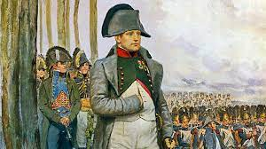

Napoléon Bonaparte (1769–1821)
Napoléon Bonaparte fut l’une des figures les plus marquantes de l’histoire de France et d’Europe. Stratège militaire, réformateur et empereur, il transforma profondément le pays et laissa une empreinte durable dans le monde moderne.

⚔️ Ascension fulgurante
- Origines : Né en Corse, Napoléon fait ses études militaires en France et se distingue très tôt par son intelligence et sa discipline.
- Général de la Révolution : Il se fait remarquer pendant la Révolution française, notamment lors de la brillante campagne d’Italie (1796–1797).
- Le coup d’État : En 1799, il renverse le Directoire lors du coup d’État du 18 Brumaire et devient Premier Consul, s’emparant du pouvoir.
- Empereur : Le 2 décembre 1804, il se couronne Empereur des Français à Notre-Dame de Paris, marquant le début de l’Empire.
🏛️ Le conquérant et le législateur
- Réformes internes : Il crée le Code civil (ou Code Napoléon) en 1804, unifiant le droit français et affirmant l’égalité devant la loi. Il fonde aussi la Banque de France et les lycées.
- Les guerres napoléoniennes : À la tête de la Grande Armée, il remporte des victoires légendaires comme Austerlitz (1805) et Iéna (1806), imposant sa domination sur l’Europe continentale.
- La chute : En 1812, sa campagne de Russie tourne au désastre. En 1813, il est battu à Leipzig et abdique en 1814.
🏝️ L’exil et les Cent-Jours
- Premier exil : Napoléon est envoyé sur l’île d’Elbe en 1814, mais il s’échappe quelques mois plus tard.
- Les Cent-Jours : En mars 1815, il reprend le pouvoir à Paris, acclamé par le peuple. Son retour inquiète l’Europe entière, qui forme une nouvelle coalition contre lui.
⚔️ La bataille de Waterloo (18 juin 1815)
- Le contexte : Cette bataille décisive, livrée en Belgique, marque la fin du règne de Napoléon et des Cent-Jours.
- Les forces en présence :
- L’armée française : environ 74 000 hommes commandés par Napoléon Ier.
- La coalition : Britanniques, Hollandais, Allemands et Prussiens sous Wellington et Blücher.
- Le déroulement : Retardé par la pluie, Napoléon attaque tard. Malgré la bravoure de ses troupes, l’arrivée des Prussiens change le cours de la bataille. La Garde impériale échoue — « La Garde recule ! ».
⚰️ Conséquences et fin de vie
- Deuxième abdication : Après Waterloo, Napoléon abdique une seconde fois et se rend aux Britanniques.
- Exil final : Il est envoyé sur l’île de Sainte-Hélène, isolée dans l’Atlantique Sud.
- Mort : Il meurt le 5 mai 1821, à l’âge de 51 ans.
- Héritage : Napoléon laisse une France modernisée : Code civil, institutions, et idées révolutionnaires diffusées dans toute l’Europe.